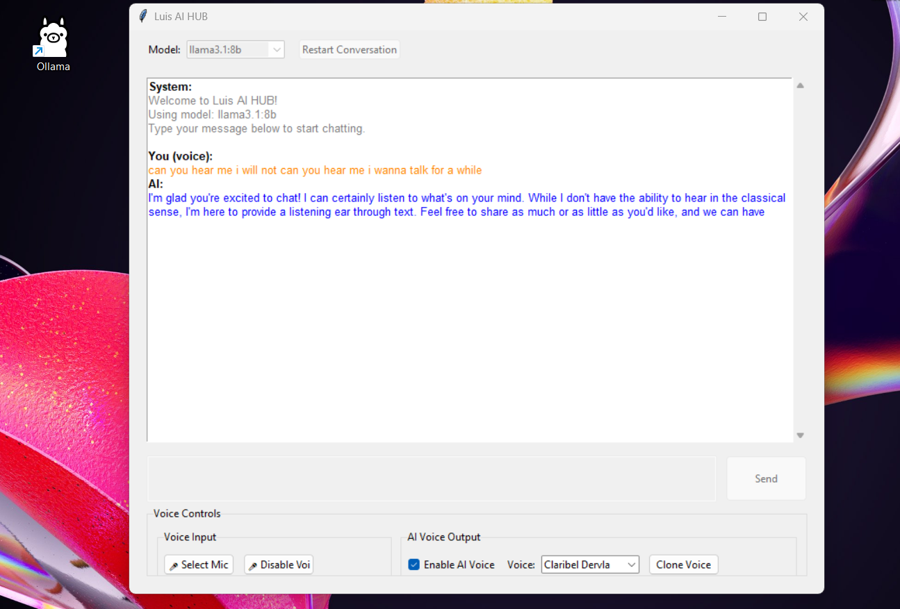
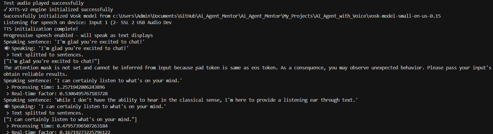
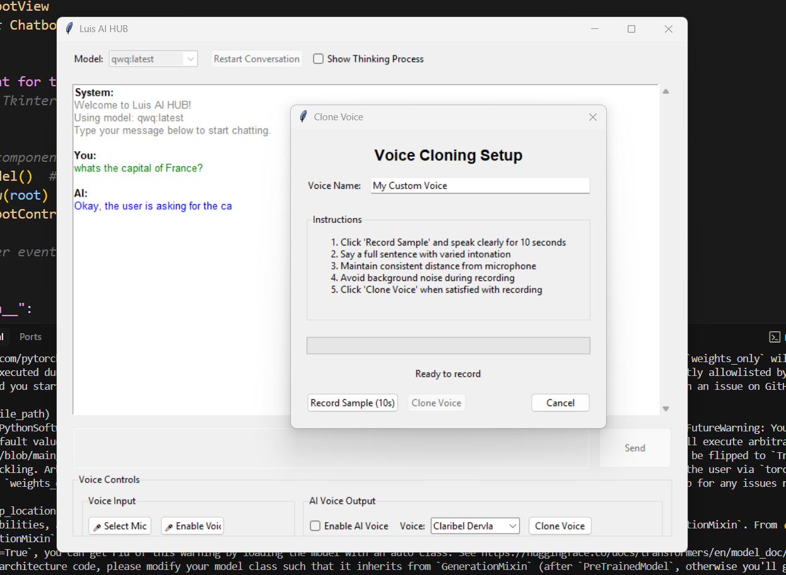

Agente de IA con Voz




Descripción del Proyecto
El Agente de IA con Voz es una aplicación basada en Python que amplía la funcionalidad de los modelos de lenguaje grandes (LLMs) al añadir capacidades de entrada y salida de voz. Crea una interfaz de voz natural que permite a los usuarios mantener conversaciones habladas con modelos de IA que se ejecutan localmente a través de Ollama.
Este proyecto combina el reconocimiento de voz offline con texto a voz de alta calidad para proporcionar una experiencia conversacional fluida. Al implementar una arquitectura Modelo-Vista-Controlador (MVC), la aplicación mantiene una clara separación de responsabilidades, haciéndola tanto mantenible como extensible.
Características Principales
- Entrada de Voz: Reconocimiento de voz offline utilizando la biblioteca Vosk para una transcripción privada y precisa del habla del usuario.
- Salida de Voz: Motores duales de texto a voz con XTTS-v2 para voces naturales de alta calidad y TTS del sistema como opción alternativa.
- Visualización de Conversación: Historial de conversación con código de colores que muestra tanto las entradas del usuario como las respuestas de la IA para una fácil referencia.
- Soporte para Múltiples LLM: Conexión a diferentes modelos de lenguaje a través de Ollama, permitiendo a los usuarios elegir el modelo más apropiado para sus necesidades.
- Arquitectura MVC: Clara separación de responsabilidades con modelo para la lógica de IA, vista para la interfaz de usuario y controlador para conectar componentes.
- Funcionamiento Offline: Todo el procesamiento de voz ocurre localmente, protegiendo la privacidad del usuario y permitiendo la operación sin conectividad a internet.